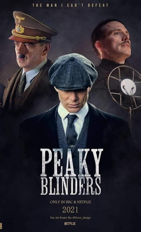

Notícias sobre peaky blinders!
Sexta temporada de Peaky Blinders ganha data de estreia.
Até o momento não foram revelados detalhes dos episódios, mas, segundo o criador da série, Steven Knight, a trama "será uma tragédia" para a família dos Shelby.
Essa será a última temporada da série e, portanto, vale a pena ficar de dentro de tudo.
A série estreia dia 27 de fevereito de 2022.

Não perca!!!